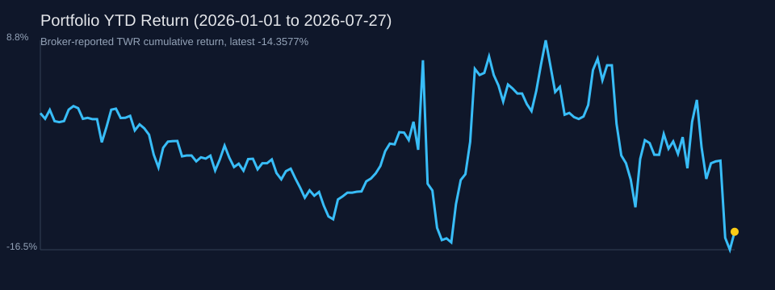

IBKR YTD trades77
Open positions7
Latest TWR return-14.3577%
Latest NAV20816.29 USD
Total Portfolio Return

Data Files
positions.csv · realized_pnl.csv · portfolio_nav_curve.csv · valuation_tables.csv
Data is read from committed CSV files. Latest seed sync: 2026-07-27.

positions.csv · realized_pnl.csv · portfolio_nav_curve.csv · valuation_tables.csv
Updated 2026-07-27T08:25:16.353Z. Cash is reported in account base currency; currency-level details are in portfolio/processed/cash_balances.csv.